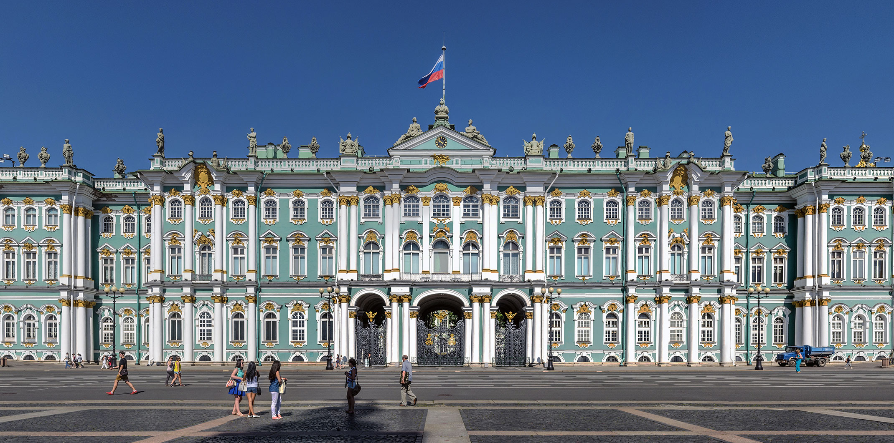

Список самых посещаемых достопримечательностей России



 Красная площадь и Кремль
Красная площадь и Кремль
Красная площадь — сердце Москвы и всей России, исторический центр города. Здесь расположены такие знаковые здания, как Кремль и ГУМ. Кремль является резиденцией президента и символом государственной власти. На площади также проходят основные праздничные и культурные мероприятия.
Эрмитаж — один из крупнейших и самых известных художественных музеев мира. В его залах собрана богатейшая коллекция произведений искусства: картины, скульптуры, ювелирные изделия и предметы декоративно-прикладного искусства. Музей расположен в Зимнем дворце, бывшей резиденции русских императоров. Посещение Эрмитажа — обязательное для любителей культуры и истории.